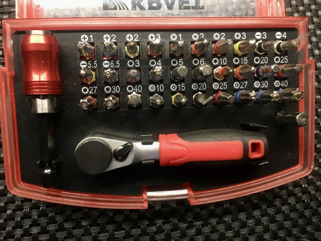

ZB-TOOLS-143443313-v1 · authoring_candidate

{
"id": "ZB-TOOLS-143443313-v1",
"blockers": [],
"review": [],
"advisory": [],
"metrics": {
"width": 4032,
"height": 3024,
"mode": "RGB",
"exif_orientation": 1,
"frame_count": 1,
"global_640_proxy": {
"contrast_p90_p10": 155.0,
"gray_entropy_bits": 7.452362423267203,
"edge_fraction_16": 0.16786296634489956
},
"object_count": 32,
"objects_per_MP": 2.624506592760561,
"class_count": 8,
"known_fraction": 1.0,
"repeated_classes": 6,
"spatial_entropy_4x4": 0.6510075432573663,
"median_bbox_short_px": 199.0,
"p10_bbox_short_px": 185.0,
"edge_touching_count": 0,
"nearcolor_pair_count": 27,
"different_class_neighbor_pairs": 40,
"nearcolor_neighbor_fraction": 0.675,
"bbox_overlap_pair_count": 3,
"han_text_coverage": 0.0,
"distinct_dependency_regions": 9,
"effective_counterfactuals": 6
},
"source": {
"kind": "real_photo",
"url": "https://commons.wikimedia.org/wiki/File:Miniature_bit_set_with_wrench_for_carrying_on_belt.jpg",
"asset_url": "https://upload.wikimedia.org/wikipedia/commons/d/d8/Miniature_bit_set_with_wrench_for_carrying_on_belt.jpg?utm_source=commons.wikimedia.org&utm_campaign=imageinfo&utm_content=original",
"license_url": "https://creativecommons.org/licenses/by/4.0",
"license": "CC BY 4.0",
"authorization": "verified",
"attribution": "Pittigrilli, Miniature bit set with wrench for carrying on belt, Wikimedia Commons",
"scene_id": "commons:143443313:miniature-bit-set",
"source_page_id": 143443313,
"same_scene_page_ids": [
143443313,
145653915
],
"native_dimensions": [
4032,
3024
],
"collection_transform": "Lossy JPEG re-encoding. EXIF orientation applied; only color-related metadata kept.",
"authoring_transform": "逐字节复制现有采集文件",
"evidence": "author/source.json"
},
"difficulty_status": "not_evaluated",
"annotation_provenance": "author_checked_native_visible_bboxes_slot_print_classes",
"preview": "001.jpg",
"nearcolor_pairs": [
{
"a": "A05",
"b": "A04",
"deltaE76": 1.6171483565793419
},
{
"a": "A09",
"b": "A08",
"deltaE76": 7.237417825268439
},
{
"a": "A10",
"b": "A08",
"deltaE76": 6.184812169433333
},
{
"a": "B01",
"b": "A01",
"deltaE76": 2.953935323695578
},
{
"a": "B02",
"b": "A02",
"deltaE76": 8.555159859607558
},
{
"a": "B03",
"b": "A03",
"deltaE76": 5.795539011055886
},
{
"a": "B03",
"b": "B02",
"deltaE76": 6.549245285243079
},
{
"a": "B04",
"b": "A04",
"deltaE76": 4.416608775675301
},
{
"a": "B05",
"b": "A05",
"deltaE76": 7.12964486971997
},
{
"a": "B06",
"b": "A05",
"deltaE76": 8.73977236777847
},
{
"a": "B06",
"b": "A06",
"deltaE76": 9.861688560245812
},
{
"a": "B08",
"b": "A08",
"deltaE76": 4.762273871922564
},
{
"a": "B09",
"b": "A08",
"deltaE76": 6.860229640429777
},
{
"a": "B09",
"b": "A09",
"deltaE76": 7.197309278846094
},
{
"a": "B09",
"b": "A10",
"deltaE76": 8.0650914282459
},
{
"a": "C01",
"b": "B01",
"deltaE76": 2.5547435606120095
},
{
"a": "C02",
"b": "B02",
"deltaE76": 8.848962931123115
},
{
"a": "C04",
"b": "C03",
"deltaE76": 4.971337553181794
},
{
"a": "C05",
"b": "B05",
"deltaE76": 11.995468322663568
},
{
"a": "C07",
"b": "B06",
"deltaE76": 6.751805690378012
},
{
"a": "C08",
"b": "B08",
"deltaE76": 5.77471074218448
},
{
"a": "C08",
"b": "B09",
"deltaE76": 4.9764806482587804
},
{
"a": "C09",
"b": "B08",
"deltaE76": 9.37647227935486
},
{
"a": "C09",
"b": "B09",
"deltaE76": 5.271887184560626
},
{
"a": "C09",
"b": "B10",
"deltaE76": 6.639405372017768
},
{
"a": "C10",
"b": "B09",
"deltaE76": 5.218490525104737
},
{
"a": "C10",
"b": "B10",
"deltaE76": 7.721841066931968
}
],
"overlap_candidates": [
{
"a": "A10",
"b": "A09",
"iom": 0.32636107402462544
},
{
"a": "B10",
"b": "B09",
"iom": 0.18549796156086196
},
{
"a": "C09",
"b": "C08",
"iom": 0.1515994683207798
}
],
"roi_metrics": [
{
"id": "a_left",
"file": "001_roi1.png",
"contrast_p90_p10": 127.0,
"gray_entropy_bits": 7.288389417509818,
"edge_fraction_16": 0.05369361195384048
},
{
"id": "a_right",
"file": "001_roi2.png",
"contrast_p90_p10": 140.0,
"gray_entropy_bits": 7.378034126264617,
"edge_fraction_16": 0.054013650740802395
},
{
"id": "b_left",
"file": "001_roi3.png",
"contrast_p90_p10": 128.0,
"gray_entropy_bits": 7.082104879854736,
"edge_fraction_16": 0.06037517335344639
},
{
"id": "b_right",
"file": "001_roi4.png",
"contrast_p90_p10": 126.0,
"gray_entropy_bits": 7.239601453333048,
"edge_fraction_16": 0.06325444826461214
},
{
"id": "c_left",
"file": "001_roi5.png",
"contrast_p90_p10": 123.0,
"gray_entropy_bits": 6.9541941087953205,
"edge_fraction_16": 0.059126484672250915
},
{
"id": "c_right",
"file": "001_roi6.png",
"contrast_p90_p10": 106.0,
"gray_entropy_bits": 6.997990712367063,
"edge_fraction_16": 0.04927698252957536
},
{
"id": "blade",
"file": "001_roi7.png",
"contrast_p90_p10": 116.0,
"gray_entropy_bits": 6.812009614188916,
"edge_fraction_16": 0.06040968851824002
},
{
"id": "anchor_l",
"file": "001_roi8.png",
"contrast_p90_p10": 113.0,
"gray_entropy_bits": 6.578305350512376,
"edge_fraction_16": 0.01851509852845832
},
{
"id": "anchor_r",
"file": "001_roi9.png",
"contrast_p90_p10": 86.0,
"gray_entropy_bits": 6.5050261464285235,
"edge_fraction_16": 0.02416592700882368
}
],
"reasoning_metrics": {
"node_count": 29,
"max_depth": 9,
"branch_nodes": 14,
"join_nodes": 11,
"multi_visual_join_nodes": 11,
"output_count": 5,
"outputs_with_visual_ancestry": 5,
"output_visual_coverage": 1.0,
"state_nodes": 4,
"parameter_nodes": 5,
"output_evidence_regions": {
"Q1": [
"a_left",
"a_right",
"anchor_l",
"anchor_r",
"b_left",
"b_right",
"blade",
"c_left",
"c_right"
],
"Q2": [
"a_left",
"a_right",
"anchor_l",
"anchor_r",
"b_left",
"b_right",
"blade",
"c_left",
"c_right"
],
"Q3": [
"a_left",
"a_right",
"anchor_l",
"anchor_r",
"b_left",
"b_right",
"blade",
"c_left",
"c_right"
],
"Q4": [
"a_left",
"a_right",
"anchor_l",
"anchor_r",
"b_left",
"b_right",
"blade",
"c_left",
"c_right"
],
"Q5": [
"a_left",
"a_right",
"anchor_l",
"anchor_r",
"b_left",
"b_right",
"blade",
"c_left",
"c_right"
]
}
},
"measurement_margins": [
{
"id": "LA_nearest",
"ratio": 4.25,
"unit": "px"
},
{
"id": "AB_nearest",
"ratio": 4.25,
"unit": "px"
},
{
"id": "BC_nearest",
"ratio": 3.025,
"unit": "px"
},
{
"id": "CR_nearest",
"ratio": 4.4,
"unit": "px"
}
],
"platform_points": [
{
"xy": [
2614,
1243
],
"label": "C06 实际单片宽直刃，控制下排资格"
},
{
"xy": [
1173,
958
],
"label": "B01 黄色基环外弧，旁有红色反光"
},
{
"xy": [
3798,
1508
],
"label": "独立短金属件的银色端面中心，定义右端距离"
}
],
"decision": "authoring_candidate"
}